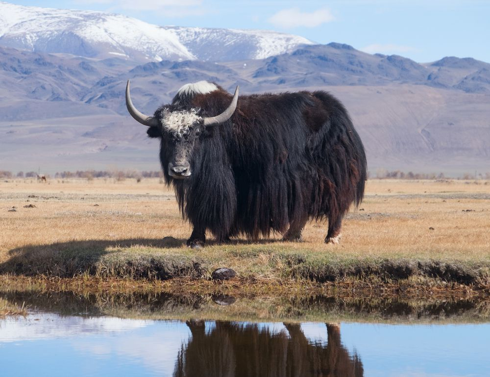

York Yak
York Yak
- Yaks are able to withstand temperatures of -40degrees C (–40 degrees F). At this temperature, they have even been seen bathing in lakes and rivers.
- Yaks live at the highest altitude of any mammal.
- Yaks have firm, dense horns which they use to break through snow in order to get the plants that are buried underneath.
- Yaks grunt and, unlike cattle, are not known to produce the characteristic bovine lowing (mooing) sound.
- Most yaks are domesticated although there is also a small, vulnerable wild yak population.

Back to Index